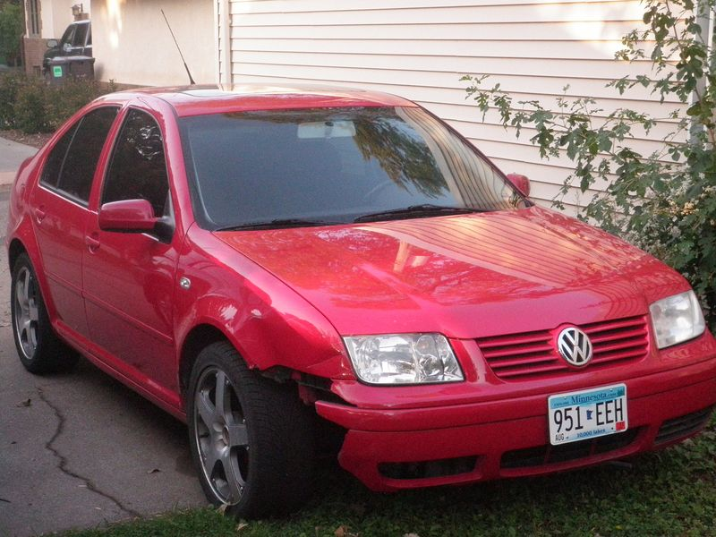
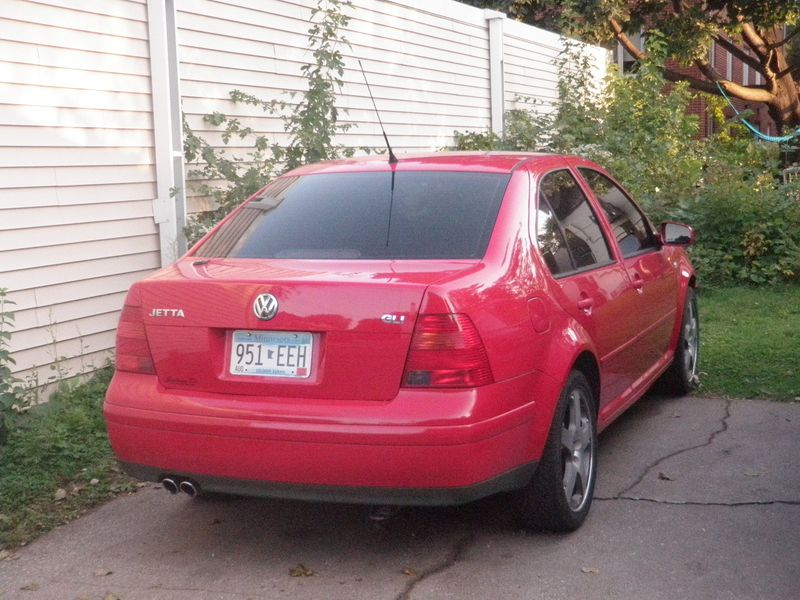

Eitan's Got a Brand New Jetta
Originally written September 2010

I just rolled back into town early this morning, right around 3:00 AM, after a long haul from Arnold, Missouri. The flight out there was easily the bumpiest, most turbulent plane ride I have ever endured, leaving me a tad terrified. Fortunately, I sat next to a fellow named Paul who splits his time working as a policeman and a financial analyst while managing a private security firm in St. Louis. Conversing with him was incredibly fascinating, though I couldn't quite bring myself to reveal that the car I was about to drive back up from Missouri to Minnesota wasn't going to be completely kosher paperwork-wise—not to mention that I just discovered my insurance policy currently lists my name as "Eitan Seleman."
Why on earth fly all the way down to Missouri just to track down a Volkswagen? I did it for the raw open drive, for the bargain price, for the adventure, and for the chance to cross landscape lines I had never laid eyes on before. But above all, I did it for the car itself.
Here is exactly what I just bought:
- 2002 Volkswagen Jetta GLI
- 69,000 original miles
- 24-valve 6-cylinder VR6 engine
- 6-speed fully synchronized manual transmission
- Deep bolster sports seats, tuned sport suspension, and ESP (Electronic Stability Protection)
- Bright RED!
But there is a slight catch: it needs some serious love. The issues are purely cosmetic, and realistically, I could cruise around exactly as it sits right now for a long time without any mechanical worry—but I absolutely won't leave it that way.
I hammered out the drive between 4:00 PM yesterday and 3:00 AM this morning, cutting through several cool small towns along the route. I made brief stops in Hannibal, Mt. Pleasant, and Iowa City. Along the way, I crossed paths with a state trooper, met a specialized VW tech, encountered a few deer that had previously been turned into roadside burger meat, stopped at a diner named Jenny's where the menu is 98% deep-fried, chatted with a guy from Oshkosh, and navigated past a massive, catastrophic wreck on the interstate. Miraculously, I managed not to get pulled over a single time.

But it was a difficult, grueling drive—partly because I was completely unfamiliar with the car’s quirks, and partly because the stretch was simply too long without enough restorative stops to stay completely sharp. The chassis shook rhythmically at highway speeds due to the wind turbulence catching a missing chunk of the front bumper. The power steering pump was growling angrily at me through every turn, the driver’s side window refused to seal properly for a 300-mile stretch, and I spent the first few counties struggling to locate where sixth gear lived on the shifter gate, though I sorted it out in the long run.
Driving for that many consecutive hours under the highway lights eventually hypnotizes your brain, making concentration an uphill battle. The darkness started playing tricks on my eyes; I began hallucinating giant shifting shadows on the shoulder, patrol cars tucked into medians that weren't actually there, and phantom curves that led nowhere. I was incredibly lucky a state trooper eventually showed up ahead of me near the end of the line, because his roof lights forced me to slow down right before a massive, fresh rollover accident on I-35. I almost didn't spot the flipped GMC Envoy resting on its roof, much like I hadn't spotted the pulverized deer on the asphalt moments earlier. I guess those are the stakes you accept when you choose to drive through the dead of night.
During my final stop at a rural gas station, I was instantly assaulted by a miniature white dog—no joke—who barked furiously at my shins, accompanied by a guy who had just rolled out of bed to handle his early newspaper delivery route. He looked over, nodded, and told me he really liked the lines of the Jetta. I looked back and told him he carried a terrifyingly aggressive dog for its physical size. He laughed, drove off into the darkness toward the cornfields, and I pulled back onto the interstate layout.
Outside of those midnight bottlenecks, the car is fast and incredibly cool. I was averaging 80 mph, exploring the vehicle’s amenities along the way. It features an excellent factory stereo system with six speakers, an open sunroof, cruise control, and an array of fun console buttons that I kept pressing. This is easily the most bells and whistles I have ever possessed in a vehicle, and amazingly, almost all of them work perfectly.
Now that I am back on campus and hoping to carve out some rare free time this semester, I will be directing my energy toward restoring this Jetta to pristine aesthetic condition. I don't think I'll touch a single bolt on the engine block, simply because the VR6 already puts out way too much power for the street. This is my definitive new project.